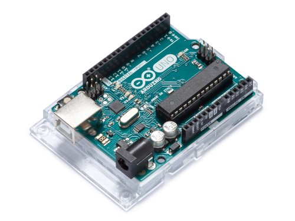
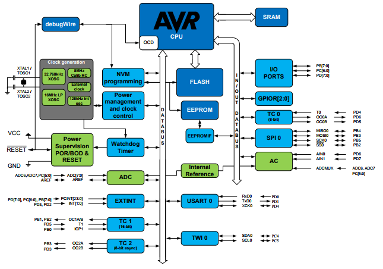

When I last did anything with Microcontrollers, it was programming, in
assembler language, large and quite expensive
Motorola M68000 development boards. The
Arduino Uno, in comparison to the 68K development system, is much more accessible, cheaper and easier to work with. Though there's not much one could do with
an Arduino board without additional I/O hardware (because it's a
controller), it's still a better resource than the Raspberry Pi for learning how a microprocessor system works at a low level. If we look at the hardware, we can see why:


Don't feel daunted by the apparent complexity of the schematics and what's on the board - most the components are for voltage regulation. What we're interested in here is a microcontroller, 14 GPIO pins, 6 analogue input pins and a few ancilliary features.
The core component on the Arduino board is the large chip to the right of the schematic. This is the
ATmega328 microcontroller, which is essentially a relatively basic microprocessor. The following diagram shows how each element within that chip maps to its pins:

Most the labels are self-explanatory, showing the I/O, system clock, memory for op code and runtime data, and a data bus. In the main schematic, you'll notice that every pin to the right of the ATmega IC is connected directly to one of three GPIO rails, and on the physical board the ATmega IC itself isn't soldered, so in principle the Arduino can serve as a development board while the chip can be transferred to a custom-made PCB.
And let's look closer-at the AVR CPU core:

The processor reads a bootloader and application bytecode from the integrated Flash memory, which I believe has a capacity of 32KB - more than sufficient for a moderately complex program. And just like any computer system, the ATmega328 has RAM, which is actually Static RAM, or 'SRAM'. This has a 2KB region allocated to general data, 32 general purpose data registers and 64 I/O registers. Separate to these are the stack pointer program counter and status registers.
Unlike the memory typically used in computing devices, SRAM doesn't contain dynamic data, since the microcontroller runs a single program with static buffers and data types - the data structure here is static.
Also on the board, by the way, is an ATmega16U2 IC, which is another, smaller, microcontroller. This appears to be the USB controller, though, functioning as the USB-to-Serial converter.
Developer Environment, Language and API
Available from the official site (linked here),
the Arduino IDE is a simple editor, compiler and library of header files. Programs are coded in a variant of C++, with includes for libraries relating to various hardware modules that might be connected to the board. For example, if we use the Ethernet hardware module, we'd import
Ethernet.h. The include statements are auto-completed by the Arduino IDE when selecting the hardware from the '
Include Library' list under the '
Tools' tab.
The following is the typical program structure:

Each program starts with a
setup() function, which executes whenever the reset button is pressed or there's a reset signal to the processor. This function appears to poll the serial interface at 9,600 times per second.
void setup()
{
// initialize serial communication at 9600 bits per second:
Serial.begin(9600);
}
The difference between this and a conventional C++ program is '
void loop()' is used in place of '
void main()' for our main function. This is because we're doing event-drive programming, where we want the microcontroller to continue looping through the same routine until there is a hardware interrupt.
Let's look at the setup function for the Ethernet programming example:
void setup()
{
Ethernet.begin(mac, ip, myDns, gateway, subnet);
server.begin();
Serial.begin(9600);
while (!Serial) {;}
}
We can read from a GPIO pin and manipulate the input as a value. e.g.
int sensorValue = analogRead(A0);
Serial.println(sensorValue);
So, in the above function, five variables are passed to
Ethernet.begin(), which must be another function somewhere in the header file. The
server.begin() and
Serial.begin() also are imported from header files.
After coding we use the Verify/Compile operation to create a binary. This will be a bytecode image containing the machine code for our program and bootloader. This bytecode image is loaded into the microcontroller's memory.
References
ARDUINO. 2018. Arduino UnoRev3.
Store Home - Arduino Uno Rev3. [WWW].
https://store.arduino.cc/usa/arduino-uno-rev3. 8th April 2018.
ARDUINO. 2018. Software. [WWW].
https://www.arduino.cc/en/Main/Software. (8th April 2018).
CROSSWARE. FLT-68K Training Suite. [WWW].
https://www.crossware.com/Flt68k. (8th April 2018).
MICROCHIP TECHNOLOGY INC. 2018. ATmega328. [WWW].
https://www.microchip.com/wwwproducts/en/ATmega328. (8th April 2018).
RS COMPONENTS. 2018. Ardiuno Uno.
Processor & Microcontroller Development Kits. [WWW].
https://uk.rs-online.com/web/p/processor-microcontroller-development-kits/7154081/. (8th April 2018).